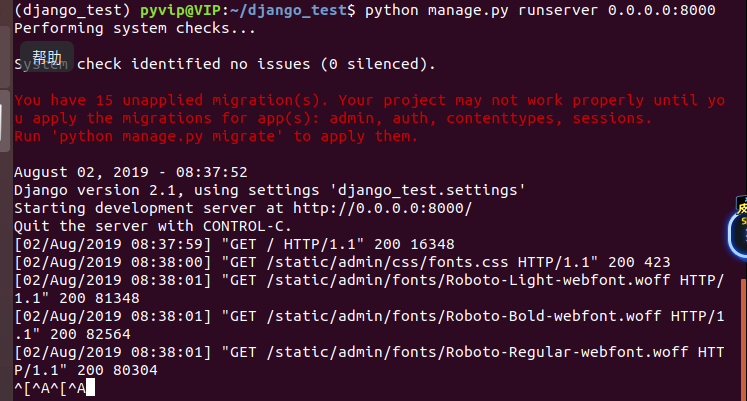
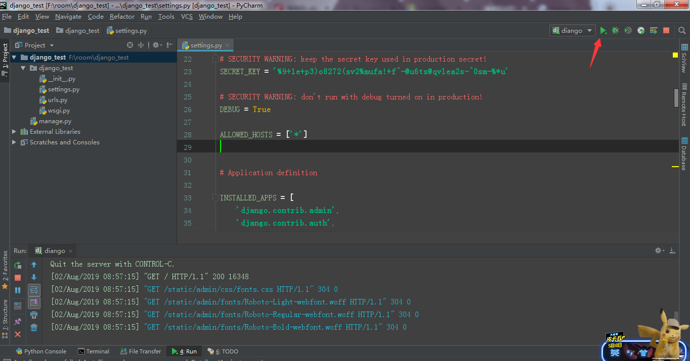

原文连接:https://www.cnblogs.com/xnnx/p/11290020.html
Django简单来说就是用Python开发的一个免费开源的Web框架
开搞！！！
工具准备：
linux（ubuntu） + python3.6 + pycham + mysql
首先在虚拟机中创建一个虚拟环境。
mkvirtualenv -p /usr/bin/python3 django_test
安装我们所需要的django（我选择的是django2.1.0版本）
pip install django==2.1.0新建项目django_test
django-admin startproject django_test然后查看一下
多了一个django_test的文件夹，我们在看一下这个文件的结构
解释一下
- manage.py：是django中的一个命令行工具，用于管理django项目
- __init__.py：空文件，告诉python这个目录是python包
- setting.py： 配置文件，包含数据库信息，调试标志，静态文件等。
- urls.py：Django项目中的URL声明
- wsgi.py：部署服务器用到的
接下来对pycham进行同步设置
新建项目
点击这里
连接虚拟接解释器，填写信息，点击next
输入密码，点击next
找到解释器位置
点击create
上传设置
对应虚拟机中目录
点击ok之后就可以把虚拟机中刚才创建的项目同步到本地了

配置本机django设置
将setting.py中的ALLOWED_HOSTS = [] 设置成 ALLOWED_HOSTS = ['*']
开启服务器一
虚拟机中进入django_test文件再输入
python manage.py runserver 0.0.0.0:8000
本地浏览器输入127.0.0.1:8000
这时我们就可以看到一个小火箭啦！
开启服务器二
点击这里
设置为0.0.0.0
再进入setting设置django
点击ok，django就设置好了

点击绿色三角启动之后，在浏览器输入127.0.0.1:8000就可以看到小火箭了。
现在开始创建视图函数
在项目目录下创建一个views.py文件（request是必备的）

再在urls.py添加路由
再去浏览器输入127.0.0.1:8000/index/
这样就得到了我们第一个页面
之后我们创建我们项目的第一个app：book
方法一：可以在虚拟机命令行中输入
python manage.py startapp book方法二：在pycham中点击这里
输入 startapp book
同步一下目录就有了我们的book这个app了
到这里，我们学习django第一站就结束了。